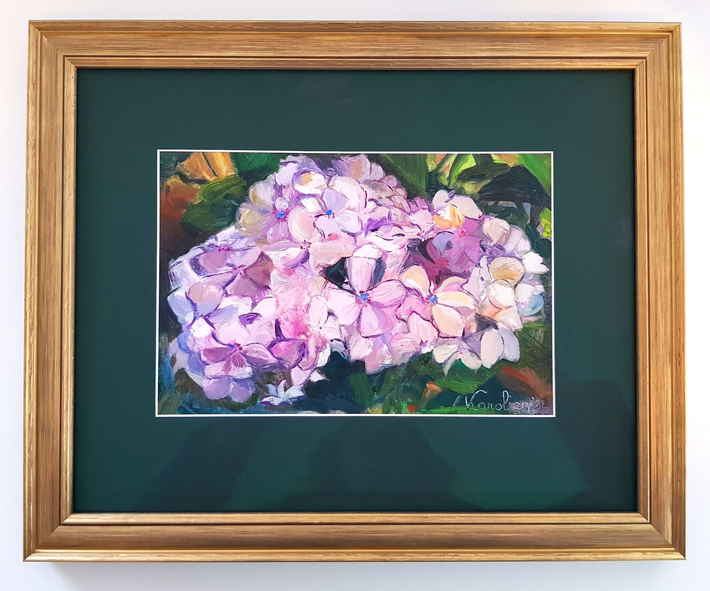
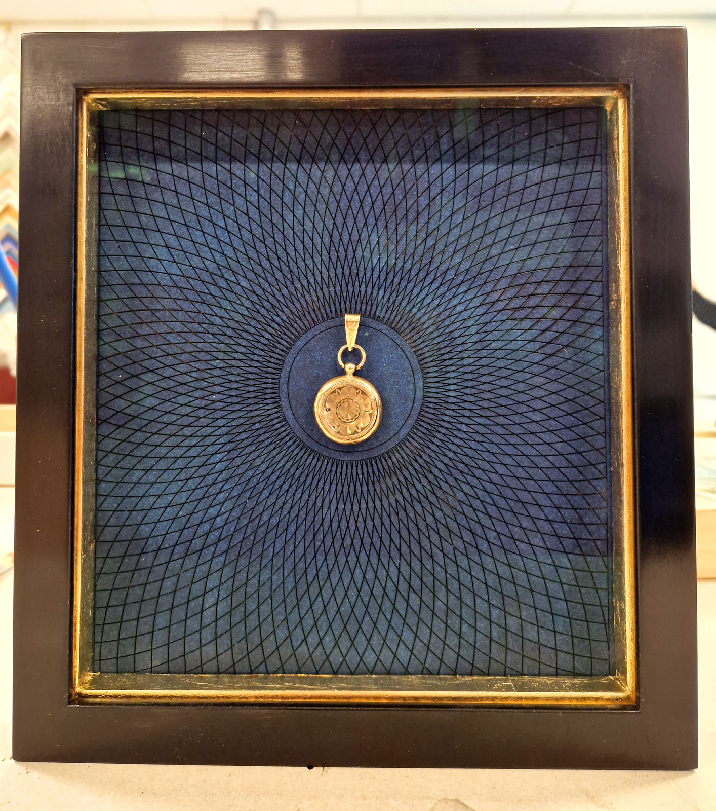
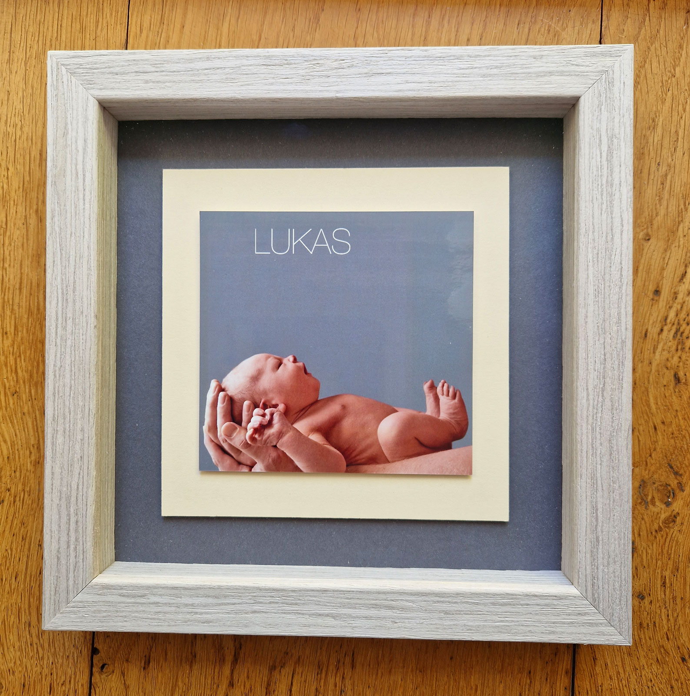

Bloemwerk in eiken lijst
Een klassiekere omlijsting waarin hout, toon en rust de hoofdrol spelen.
Portfolio
Een selectie van recente opdrachten en bijzondere inlijstingen. Van klassiek en rijk tot rustig en modern, altijd gekozen in dienst van het werk.


In het portfolio ziet u niet alleen verschillende stijlen, maar ook verschillende keuzes in materiaal, diepte, kleur en afwerking. Soms vraagt een werk om rust en soberheid, soms juist om een rijker kader dat de uitstraling versterkt.
Die variatie is precies waarom het portfolio zo belangrijk is: het laat zien hoe verschillend de oplossingen kunnen zijn wanneer de lijst echt in dienst staat van het werk.
Deze werken laten goed zien hoe materiaalkeuze, profiel, afwerking en context samen het verschil maken.
Een rijk profiel met gelaagde kleur en ornament, gekozen om het werk niet te overschaduwen maar juist meer diepte en aanwezigheid te geven. Dit is het soort project waarin materiaalgevoel en afwerking echt zichtbaar worden.
Het is ook een voorbeeld van hoe een uitgesproken lijst toch in balans kan blijven met het werk zelf.

Een klassiekere omlijsting waarin hout, toon en rust de hoofdrol spelen.

Dubbel zwevende presentatie die een klein object meer lucht en betekenis geeft.
Een oplossing voor werk en objecten die diepte nodig hebben om goed tot hun recht te komen.

Herstel van een zwaar beschadigde lijst met behoud van karakter en uitstraling.
Het laat zien hoe verschillend de oplossingen kunnen zijn en hoe zorgvuldig er wordt gekeken naar werk, materiaal en afwerking.
Van sober en modern tot klassiek en rijk: niet elk werk vraagt om dezelfde omlijsting.
De voorbeelden laten zien dat profiel, kleur en materiaal nooit willekeurig gekozen worden.
Een lijst wordt pas echt goed wanneer het werk sterker gaat spreken in de ruimte waar het komt te hangen.
Het portfolio geeft richting, maar elk werk vraagt uiteindelijk om een eigen keuze. In het atelier bekijken we rustig wat past.